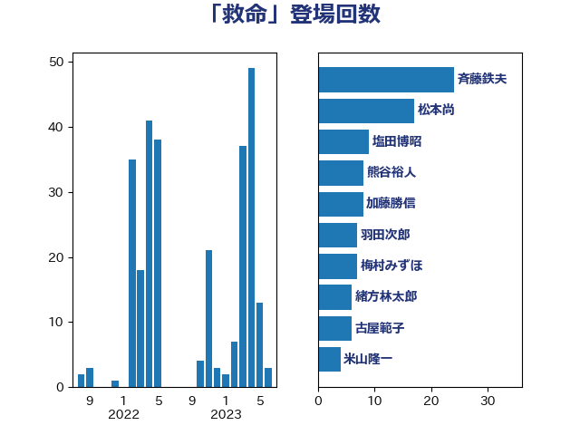

単語「救命」

| 斉藤鉄夫 | 公明党 | 24 回 |
| 松本尚 | 自由民主党 | 17 回 |
| 塩田博昭 | 公明党 | 9 回 |
| 熊谷裕人 | 立憲民主党 | 8 回 |
| 加藤勝信 | 自由民主党 | 8 回 |
| 羽田次郎 | 立憲民主党 | 7 回 |
| 梅村みずほ | 日本維新の会 | 7 回 |
| 緒方林太郎 | 無所属 | 6 回 |
| 古屋範子 | 公明党 | 6 回 |
| 米山隆一 | 立憲民主党 | 4 回 |
| 石井苗子 | 日本維新の会 | 4 回 |
| 後藤茂之 | 自由民主党 | 4 回 |
| 鬼木誠 | 立憲民主党 | 3 回 |
| 高橋はるみ | 自由民主党 | 3 回 |
| 菅義偉 | 自由民主党 | 3 回 |
| 秋野公造 | 公明党 | 3 回 |
| 城井崇 | 立憲民主党 | 3 回 |
| 鈴木俊一 | 自由民主党 | 2 回 |
| 谷田川元 | 立憲民主党 | 2 回 |
| 藤巻健太 | 日本維新の会 | 2 回 |
| 芳賀道也 | 国民民主党 | 2 回 |
| 石川大我 | 立憲民主党 | 2 回 |
| 永岡桂子 | 自由民主党 | 2 回 |
| 森屋隆 | 立憲民主党 | 2 回 |
| 梶原大介 | 自由民主党 | 2 回 |
| 岸田文雄 | 自由民主党 | 2 回 |
| 山本博司 | 公明党 | 2 回 |
| 吉田とも代 | 日本維新の会 | 2 回 |
| 古賀千景 | 立憲民主党 | 2 回 |
| 串田誠一 | 日本維新の会 | 2 回 |
| 中川郁子 | 自由民主党 | 2 回 |
| 齋藤健 | 自由民主党 | 1 回 |
| 高橋千鶴子 | 日本共産党 | 1 回 |
| 高木真理 | 立憲民主党 | 1 回 |
| 青木愛 | 立憲民主党 | 1 回 |
| 鈴木敦 | 国民民主党 | 1 回 |
| 金子恭之 | 自由民主党 | 1 回 |
| 野田佳彦 | 立憲民主党 | 1 回 |
| 輿水恵一 | 公明党 | 1 回 |
| 谷公一 | 自由民主党 | 1 回 |
| 西村康稔 | 自由民主党 | 1 回 |
| 萩生田光一 | 自由民主党 | 1 回 |
| 福山哲郎 | 立憲民主党 | 1 回 |
| 神田憲次 | 自由民主党 | 1 回 |
| 石川香織 | 立憲民主党 | 1 回 |
| 田村貴昭 | 日本共産党 | 1 回 |
| 田村智子 | 日本共産党 | 1 回 |
| 田名部匡代 | 立憲民主党 | 1 回 |
| 田中健 | 国民民主党 | 1 回 |
| 浜口誠 | 国民民主党 | 1 回 |
| 浅田均 | 日本維新の会 | 1 回 |
| 横沢高徳 | 立憲民主党 | 1 回 |
| 本田顕子 | 自由民主党 | 1 回 |
| 木村英子 | れいわ新選組 | 1 回 |
| 木村次郎 | 自由民主党 | 1 回 |
| 庄子賢一 | 公明党 | 1 回 |
| 平木大作 | 公明党 | 1 回 |
| 岡田直樹 | 自由民主党 | 1 回 |
| 山井和則 | 立憲民主党 | 1 回 |
| 太栄志 | 立憲民主党 | 1 回 |
| 伊藤渉 | 公明党 | 1 回 |
| 伊東信久 | 日本維新の会 | 1 回 |
| 今井絵理子 | 自由民主党 | 1 回 |
| 仁木博文 | 無所属 | 1 回 |
| 井野俊郎 | 自由民主党 | 1 回 |
| 中谷真一 | 自由民主党 | 1 回 |
| 中川正春 | 立憲民主党 | 1 回 |
| 三上えり | 立憲民主党 | 1 回 |